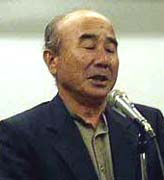

沖克太郎さんからの報告
（2003年9月5日エル大阪「1960年三池・1963年ＣＯ大災害」関西写真展実行委員会結成会議における講演より）

沖克太郎さん、元三池ＣＯ裁判原告団団長。昭和５５年、第３６期三池労組組合長歴任。三川坑出身。熊本県
荒尾市在住。
えーと、きょうはですね、私の方は報告する予定はなかったんですけど、私は４０年間、ＣＯ闘争をですね、共に闘い続けています。
時間もありませんので、ＣＯ闘争をですね、闘っている中で感じたことを２，３述べてみたいと思います。
まずひとつはですね、この大災害がですね、何で起きたかですね、どこに責任があるのか、たまたまですね、偶然にそういう災害が
起きたのか、ということなんですね。
ちょうど後ろの看板がですね、「１９６０年の三池闘争、１９６３年の三池大災害」ということになっています。
三池闘争は何で闘ったのか、これはですね、単に三井鉱山がですね、えー、経営者がさらに儲けをよりよく高くするために合理化で
活動家のクビを切ったということではないんですね。それだけではないと。それもありますけどですね、もっと奥にあるのは何かと言
いますとですね、当時の日本はですね、資本主義体制がですね、もっとですね、世界の競争に勝てるように日本のそういう資本主義体
制をですね、高度に発展させようとする政策がですね、決められました。
そいで、三池闘争でですね、三池の労働者、活動家をですね、１２００名のクビをですね、完全に討ち取ってしまいました。私たち
はですね、三池だけではなくして、全国の労働者と共にですね、反対して闘いましたけれどね、これをやめることは出来ませんでした。
ここ大阪からもですね、昼夜、徹夜をしながら夜行列車に揺られてですね、大牟田の現地にですね、何度も来ていただきました。しか
し勝てませんでした。そいで、その明くる年にはですね、政府はですね、全国の炭鉱労働者１０万人のクビ切りをですね、堂々と宣言
をいたしました。そして、政府としての石炭政策、当時日本にあった７０６鉱の炭鉱の内ですね、これをビルドにするかスクラップに
するかですね、炭鉱をですね、その生産性に合わせてですね、潰して行くと、終わったら補助金を与えていくという政策を政府は決め
たわけです。
それによってですね、結果的に三池炭鉱はですね、爆発が起きた三川坑大斜坑のですね、ベルトコンベヤが１２台ありました。三池
労組が１２００名の活動家と共に闘っている時点ではですね、労働者はその１台のベルトに１人づつが配置されておりました。しかし、
第二組合がでけて、労働者が分裂させられてですね、会社の力が強まっていく中でですね、労働者がその１２台のベルトをですね、２
人で見なければならんという事態になってきたわけです。で、結果的に人減らしです。で、生産は急速に高まっていきました。死亡者
もですね、今まで１年に１人か２人の死亡者しかいなかったのにですね、１年に１６人、１７人、そういう死亡災害も増えていきまし
た。そして、昭和３８年のですね、大災害が起こったわけです。だから、それが単にですね、偶然に起こった災害とは違います。私た
ちはですね、当然ですね、起こるべきして起きたですね、充分予知された災害であると、人が意図的にね、こういう、合理化によって
ですね、これだけの労働者の命を奪いですね、労働者を廃人にさせたのではないかと、そのような災害であると、私たち三池労組はき
ちっと位置付けをしました。そして、そういう視点に立ってですね、闘いをしてきました。闘いはですね、簡単なんです。要求も簡単
です。まず、会社の、政府のですね、そういう責任で起きた斜坑災害ですね、このことで、労災法では３年経ってですね、職場で働け
んモンはですね、クビを切っていいと法律の中で書いてあるわけですよ。現在もですね。だから少なくとも当たり前に考えて、解雇だ
けはですね、本人が働けれるようになるまで、定年退職になるであろう５５歳までですね、クビは切らないと。それから治療もですね、
社会復帰し働くことが出来るようになれるまでですね、治療の保障をすると。賃金もですね、本人のですね、当然の平均賃金の１００
パーセント支給すると。そういう要求をしただけなんです。ところがね、そういう要求を政府に持って行けばですね、とてつもない要
求だというのが当時の状況なんです。これは今もですね、そういう内容についてはですね、解決していません。
で、さらにはですね、死亡した労働者、これに対して三池労組はですね、１００万円の要求をしました。そしたら当時のそういう運
動の中でですね、炭労はですね、「そげん途方もない要求だ」と。１人の労働者の命の代償として企業に要求するのは、弔慰金が１０
０万円は多すぎると。総評の太田薫もですね、「そげんバカげた要求はしたらいかん」と。それが上層部のですね、当時の指導性だっ
たわけです。今もですね、当時のですね、労働者運動の中にはですね、なんと言ってもあれだけの果敢な闘いを行いながらも、本当に
労働者の命とかですね、労働者の体とか、家庭生活のこととかですね、そういうことを中心にした労働運動というのは全くやっていな
かったんですね。だから三池労組はですね、上層部とケンカをしながらそういう要求をいたしました。しかし、圧倒的に世論がそうい
う関係ではありませんので、当時１０万円の弔慰金がですね、５０万円になったと、これで終わりました。
その２年後にですね、さらに全国の炭鉱で重大災害が発生しましてね、死亡災害が続出しました。長崎県の伊王島で２年後に起きた
災害の時はですね、労働組合が１００万円を要求いたしましたら、会社は即１００万円の回答をしました。
このようにですね、三池はＣＯ闘争で当たり前の要求をする、当たり前の主張をすることによってですね、あの当時ですね、そうい
う運動の中にもですね、一番基盤に立ってですね、労働者が働けなくなった場合、そういう労働者をどう守ってゆくのかですね、どう
やって安心して労働者一人ひとりをですね、定年退職まで守るかというのがね、労働組合の運動の使命ではないかというようなことを
ですね、自分たちはＣＯ闘争の中で訴えてまいりました。
そいで、俺たち自身が、自分たち自身の命の問題、健康の問題、家庭生活の問題、そういうことに対してね、本当はどうあるべきか
というようなことで、きちんと持たなければならないんではないかということを訴えてきたわけです。
で、さきほど清水さんが言いましたＣＯ立法の中で自分たちの要求を立法化せよと言って政府に出したわけです。そして、当時の早
川労働大臣はですね、こういう三池の言い方で法文化すればですね、労災法を変えれば３０万人以上の労働者をですね、政府が抱えな
いかんと、こげなことを言うわけですよ。ということはですね、それぐらいの労働者をですね、ほったらかしにしとったというわけな
んですね。だから、そういう問題を含めましてですね、ＣＯ闘争は後で裁判闘争で闘うという色んな形をとってきましたけども、一番
基本になりますのはですね、本当に自分たちが人間としてどういう要求があるのか、どういうことが当たり前なのかですね、本当に自
分たちが働きよってですね、命が奪われたかと。それから気のついたことはですね、クビになってですね、家庭が破壊されたこと、こ
ういうことに対して一体誰の責任なのかと、そういうことをやっぱり明確にしないとですね、これが全部個人の責任に転嫁されている
のがですね、現状ではないだろうかと。だからきょう集まったですね、皆さんがですね、そこらへんの核になってですね、本当に労働
組合の運動をですね、今からもう一回ね、職場の中から、地域の中からですね、考えなおさんといかんのじゃないかと。
今、もう、とてもじゃないがですね、クビ切り、リストラ、それがもうよかほうですよね。もう、自分から命を絶つ、こういうこと
は年々増えていくわけなんです。これはね、そういうふうに命を絶っていくね、労働者一人ひとりの責任ではないと思うんですよ。も
っとね、階級的な運動をしている階級的な政党の人たちですね、そういう人たちはですね、そういうところに眼を据えてですね、そう
いう立場に立って、本当に今の労働者のですね、組織をどう評価していくかですね、これがますますね、物も言えない当たり前のこと
も当たり前のようにきちんと言えない、そういう組織であればあるほどですね、そういう労働者が多くなっていくんではないかと思っ
ています。だから一番ですね、労働者の出発点に立った三池のＣＯ闘争をですね、そういう情勢であればあるほどね、ひとつ一つの職
場に、中に入って、あるいは地域の中に入って、自分たちが何人かでも手を取り合って団結をしてちゃんと抵抗をすればですね、ちゃ
んと展望が見えてくると。間違いは間違いだと、そういうことが正しいんだということで、堂々と闘っていこうではないかと。そうし
ないとね、ますます自分たちが惨めになっていくということをですね、４０年間の闘いの中でつくづく感じているわけなんです。だか
ら、この闘いは自分自身の闘いではありますけども、一人でも多くの労働者に理解してもらいながら手を取り合ってですね、この三池
のＣＯ闘争というものをですね、風化させないで、こういうことがあったことは事実なんだから、こういうことを再び起こさんために
もですね、こういうことを全国に広めて行きたいと思っています。どうもありがとうございました。
BACK
|